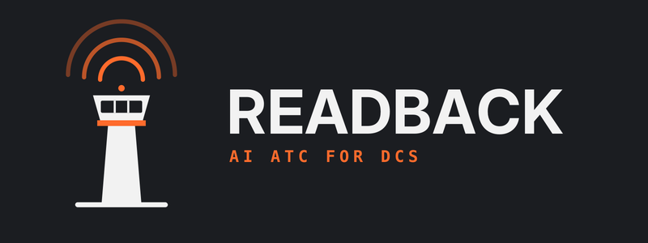

How Readback ATC works, how to run it on your DCS World server, and exactly what your pilots say to each controller - with the answers they will hear.
Readback ATC runs on the PC that hosts your SRS server, next to DCS. Each controller is a separate program that joins SRS like a radio and listens on its own frequency.
| It reads | For |
|---|---|
| SRS (with External AWACS Mode on) | Hearing pilots and talking back. Required. |
| OpenAI API key | Speech recognition. Required, whichever voices you use. |
| Tacview real-time telemetry | Positions: the AWACS picture, radar checks, Command's handoffs and bearings, Marshal's radar contact, Paddles' groove calls, traffic alerts and the dashboard's air picture. Strongly recommended; towers still work without it. |
| The mission file (.miz) DCS is running | Weather, wind and altimeter for ATIS and the towers, and which runways are in use. Followed automatically when the server loads a new mission. |
| The DCS server's dcs.log | Reports and Stats: shots, kills, takeoffs, landings and carrier grades. |
The standard start files (made by Setup) run the towers, ATIS, Command, the AWACS, Marshal and Deckboss. Paddles, the tankers and the JTACs are in the start files of squadrons that use them; the Roles table in Settings lists what yours run.
| Station | Default frequency | What it does |
|---|---|---|
| Tower (one per field) | The field's DCS tower frequency | Radio checks, startup, taxi, takeoff, departure handoff, arrivals and the overhead break, straight-ins, go-arounds, emergencies, traffic alerts. |
| ATIS | The field's ATIS frequency | A looping weather and runway broadcast with an information letter. |
| Command | 282.000 AM | The strike net: check-in, fence in/out, tasking, tanker requests, combat calls, fuel, and the recovery handoff. |
| AWACS (e.g. Darkstar) | 264.000 AM, or as set in Setup | Picture, bogey dope, declare, snaplock, spiked, vectors, and threat calls on its own. |
| Deckboss | 128.600 AM | Carrier launches: catapults, tension, airborne, push to Marshal. |
| Marshal | 306.300 AM | Carrier recovery: check-in, the stack, Charlie, Case I and Case III. |
| Paddles | 128.300 AM | The LSO: ball call, live glideslope and lineup calls, wave-offs, grades. |
| Tankers (Texaco, Shell) | As your start files set | Join-up, fuel request, observation, basket or boom, reform and departure. |
| JTAC (e.g. Hitman) | As your start files set (FM) | Close air support: target brief, readback, cleared hot, BDA. |
Every frequency, name and voice can be changed in Settings > Roles (section 13).
Readback ATC listens like a real controller: it answers calls addressed to it, from a callsign it can hear.
The call tables below are the wordings Readback is tested against; similar wordings work too. The examples use Batumi and Viper 1-1 - use your field and callsign.
Address the tower in any of these ways: "Batumi Tower, ...", "Batumi, ...", "Tower, ...", or CTAF style "Batumi Traffic, Viper 1-1, rolling runway 13."
| When | Say | You hear |
|---|---|---|
| Radio check | radio check / comm check / how copy / green jet | Loud and clear. |
| Before engines | request startup | Startup approved. |
| Taxi | request taxi / ready to taxi | Altimeter, taxi to the runway, hold short. |
| At the hold | holding short / at the hold | Line up and wait - then cleared for takeoff when the runway is clear. |
| Takeoff | ready for takeoff / request takeoff | Wind, runway, cleared for takeoff, report airborne. |
| After takeoff | airborne / departing / rolling runway 13 | Climb to angels N, expect handoff at seven DME. |
| Leaving | seven DME / request handoff / pushing command | Handoff to Command, or good day. |
At about 7 nm the tower's departure controller calls you on its own: "Viper 1-1, Batumi Departure, have you seven miles, angels six, you are leaving my airspace. Push Command, two eight two point zero. Good day." This needs Tacview; without it, call "seven DME" yourself.
Pilot: Batumi Tower, Viper 1-1, request taxi.
Tower: Viper 1-1, Batumi Tower, roger, altimeter two niner niner two, taxi runway one three, hold short of the runway, advise when ready for takeoff.
Pilot: Batumi Tower, Viper 1-1, holding short runway 13.
Tower: Viper 1-1, Batumi Tower, line up and wait runway one three.
Tower: Viper 1-1, Batumi Tower, wind one two zero at four, runway one three, cleared for takeoff. Report airborne.
Pilot: Batumi Tower, Viper 1-1, airborne.
Tower: Viper 1-1, Batumi Tower, proceed to angels five, expect handoff at seven DME.
| When | Say | You hear |
|---|---|---|
| Inbound | 10 mile initial / 10 miles inbound | Runway, wind, altimeter, report initial. |
| Overhead | 3 mile initial / overhead | Break approved, number N, report base. |
| Break | break | Report downwind. |
| Downwind | downwind | Number N, report base. |
| Base | base, gear down | Cleared to land. |
| Final | on final / 5 mile final | Cleared to land, runway NN. |
| Touch and go | on final, touch and go | Cleared touch and go. |
| Straight in | request straight in / ILS approach | Straight-in approved, report final. |
| Go-around | going around | Climb runway heading, report downwind. |
| Off the runway | runway vacated / clear of the active | Taxi to parking. |
| When | Say | You hear |
|---|---|---|
| At the hold | flight of two, Viper 1-2, holding short | Viper 1-1 flight, line up and wait. |
| Takeoff | flight of two, ready for takeoff / two-ship, ready for takeoff | One takeoff clearance for the flight. |
| Inbound | flight of two, 10 miles inbound full stop | Viper 1-1 flight, runway, wind, report initial. |
| Landing | flight of two, full stop | Cleared to land - the whole flight. |
| Vacated | flight of two, clear of the active | Taxi to parking for every jet. |
| When | Say | You hear |
|---|---|---|
| Repeat | say again | Your last answer again (within 2 minutes). |
| Wind and altimeter | wind check / say altimeter | Wind and altimeter. |
| Where am I | radar check | Angels, range and bearing from the field (Tacview). |
| Hung ordnance | hung ordnance | Straight in, de-arm at the end of the runway. |
| Emergency | mayday mayday mayday / pan pan / declaring emergency, request runway 13 | The runway is yours - the one you name, if you name one. You go to the top of the queue. |
| After an emergency | one soul on board, fuel state 1.5 | Crash crew standing by, cleared to land. |
Traffic alerts: with Tacview, the tower warns two airborne aircraft near the field that are converging to a close pass - "traffic alert, two o'clock, one mile, same altitude". Formations and rejoins stay quiet.
Red fields: each tower card on the dashboard has a Blue/Red switch. A red field's tower talks to the red coalition on SRS and hands its departures to Red Command, for servers that run one.
Command is the mission's controller between the airfield and the fight. Address it as "Command, Viper 1-1, ...".
| When | Say | You hear |
|---|---|---|
| Radio check | radio check / how copy | Loud and clear. |
| Check in | checking in | Loud and clear, proceed mission. |
| Fence in | fence in, state 6.2 | Copy fence in, cleared hot. |
| On / off station | on station / off station | Copy on station, good hunting. / Proceed to assigned pattern. |
| Ask for work | request tasking | Your tasking, or the JTAC to contact, where your mission has them. |
| Tanker | request tanker | The nearest tanker's bearing, range and angels, and its frequency. |
| Bullseye | say bullseye | Your position from bullseye (Tacview). |
| Weapons | in hot / pickle / rifle | Cleared hot. / Copy pickle. / Copy rifle. |
| Shots and kills | Fox 3 / splash one MiG-29 | Copy Fox three. / Copy splash, good kill. |
| Fuel | state 5.2 / Joker / Bingo, RTB | Copy state. / Copy Joker. / Copy Bingo, RTB, nearest tanker. |
| Out of weapons | Winchester, RTB | Copy Winchester, RTB, handoff at 30 nm. |
| Going home | fence out / RTB / request recovery | Copy fence out, safe passage. / Expect handoff at 30 nm. |
Coming home, Command hands you to the tower - or to Marshal for the carrier - at about 30 nm (Tacview). A call of "Viper 1-2 down" gets "Viper 1-2 down, launching CSAR."
The AWACS uses its callsign (Darkstar in these examples; you set it in Setup) and sees what Tacview sees - only what the AWACS aircraft could see over the terrain, if your mission has one airborne.
| When | Say | You hear |
|---|---|---|
| Radio check | radio check / comm check | Good copy - or "... but I don't see you on scope". |
| Check in | checking in | Radar contact. |
| Fence in | fence in | Copy fence in, then a picture. |
| Where am I | alpha check | Your position from bullseye. |
| The air picture | picture / request picture | Up to three groups: bullseye, altitude, track, ID, contacts, type. |
| Nearest threat | bogey dope | Group BRAA 045/32, 25,000, hot, hostile, Flanker. |
| Jets or helicopters only | any fast movers / any slow movers | The nearest fixed-wing or helicopter group. |
| Identify a contact | declare bullseye 010 for 48 at 25000 | Hostile, friendly, furball or clean. |
| Contact on your nose | snaplock 125 for 10 at 8000 | The group there, as BRAA. |
| RWR spike | spiked 080 / strobe 080 | The group on that bearing - or clean. |
| Steer | vector to tanker | Bearing and range to the nearest tanker. |
| Kill | splash one | Copy splash one. |
| Leaving | fence out / checking out | Copy fence out. / Copy, good day. |
Without being asked, the AWACS broadcasts a picture every few minutes and calls threats, merges and faded contacts to the flights it is controlling. With no AWACS aircraft airborne it reports off station.
Lead with "Deckboss". Four catapults; when all are busy you join the queue.
| When | Say | You hear |
|---|---|---|
| Ready to go | request taxi / green jet | Cleared to cat N, or wait in line. |
| On the cat | ready cat 2 / shoot | Under tension, spin it up, shooter's discretion. |
| After the shot | airborne | Push Marshal, three zero six point three. |
| Carrier heading | say BRC | Mother's BRC (magnetic). |
Lead with "Marshal" (or "Union Marshal") and give your callsign with its number.
| When | Say | You hear |
|---|---|---|
| Check in | checking in | Range and bearing; say marking moms. |
| Marking moms | marking moms 340 for 30, angels 12, state 6.5 | Radar contact, weather, case, BRC, altimeter, your stack angels, report see me at ten. |
| Ten miles | see you at ten | Visual at ten, say state. |
| Fuel | state 5.2 | Copy state. |
| In the stack | established angels 2 | Signal Charlie - or hold, with your position. |
| Leaving the stack | commencing | Copy commencing, check in three mile initial. |
| Case III | platform | Final bearing NNN. |
| Three miles | initial / three mile initial | Paddles has you, good luck. |
| Departing | clear seven miles | Push Command. |
Pilot: Marshal, Viper 1-1, marking moms 340 for 30, angels 12, state 6.5.
Marshal: Viper 1-1, Union Marshal, radar contact, angels 12, range 30 miles, bearing three four zero from mother, expect Case One recovery, BRC 275, altimeter two niner niner two, Marshal at angels two, report see me at ten.
Pilot: Union Marshal, Viper 1-1, see you at ten.
Marshal: Viper 1-1, Union Marshal, visual on mother at ten, say state.
Pilot: Union Marshal, Viper 1-1, established angels two, state 5.8.
Marshal: Viper 1-1, Union Marshal, signal Charlie.
Pilot: Union Marshal, Viper 1-1, commencing.
Marshal: Viper 1-1, Union Marshal, copy commencing, check in three mile initial.
Pilot: Union Marshal, Viper 1-1, three mile initial.
Marshal: Viper 1-1, Union Marshal, Paddles has you, good luck.
Paddles watches your approach in Tacview and talks you down: you fly, Paddles calls. Give your modex or full callsign.
| When | Say | You hear |
|---|---|---|
| In the break | in the break | Roger, call abeam. |
| Abeam | abeam | Paddles contact, Hornet in the groove, at three-quarters of a mile call the ball. |
| Ball | Hornet ball, 5.5 | Roger ball. |
| No ball | Clara, 5.0 | Paddles contact, keep it coming. |
| After the trap | red deck | (No reply. The deck is foul: the next jet is waved off.) |
| Clear of the landing area | green deck | Roger green deck, contact Deckboss. |
In the groove Paddles calls what it sees, up to once a second while you are off: a little high, you're high, you're low, power, right for lineup, come left, you're fast / slow. No ball call by about 0.6 nm brings "call the ball". "Wave off, wave off, wave off" is mandatory: power and climb straight ahead. Paddles grades every pass (_OK_, OK, (OK), ---, cut, bolter, wave-off) with the wire in its log; DCS's own LSO grade for each trap goes to the greenie board on the Stats page.
Deckboss (launch) → Marshal (on departure: clear seven miles) → Command for the mission → Command hands you back to Marshal at about 30 nm → Marshal (stack, Charlie, commencing, initial) → Paddles (break, abeam, ball, trap) → green deck → Deckboss.
Where your start files run them. Readback is the voice on the tanker's frequency; DCS still flies the tanker, and the DCS comms menu's Ready pre-contact is still needed before fuel flows.
| Step | Say | You hear |
|---|---|---|
| Initial | Texaco 1-1, Viper 1-1, 15 mile initial for port observation, intent to refuel | Cleared port observation, angels, velocity. How much do you request? |
| Give | request 5.0 / request full | You are cleared for five thousand pounds / full give. |
| Trail | 1 mile trail for port observation | Continue port observation. |
| Observation | established port observation | Copy. Port and starboard baskets open. |
| Basket | moving to port basket | Cleared port basket - or standby, basket occupied. |
| At the basket | established port basket | Copy, call ready pre-contact. |
| Ready | ready pre-contact | Cleared contact, port basket. |
| Done | satisfied, moving to starboard reform | Cleared starboard reform. |
| Leaving | checking out / moving on to mission | Cleared to depart. |
Observation is always port, reform always starboard. One jet per basket; a boom tanker (Shell) takes one receiver at a time ("moving to the boom"). The lead makes the initial and checking-out calls for the flight.
| Step | Say | You hear |
|---|---|---|
| Check in | checking in / request tasking | Target, name and IP; read back. |
| Readback | target 4, Indigo | Good readback, report IP inbound. |
| IP | IP inbound | Continue. |
| Attack | in from the south / in heading 330 | Cleared hot - or abort, abort, abort. |
| Off | off / off safe | Egress. |
| Results | request BDA | The effects, then re-attack, a correction, or home. |
| Abort | abort | Copy abort, re-attack from the IP. |
Open Readback ATC from the Start menu, or http://localhost:7000 in a browser on the server.
| Panel | What it shows |
|---|---|
| Roles | Every controller with its frequency and state, with Start/Stop for each, and Start all / Stop all for the towers. |
| Airborne | Everyone Tacview sees in the air, with bearing and range from bullseye (true), altitude and speed; the aircraft in a field's pattern underneath. |
| Airfield Traffic | Fields with traffic: who is taxiing, taking off, in the pattern or landing. "All clear" when there is none. |
| Weather | Ceiling, visibility, altimeter, wind, temperature and night, the carrier case selector and Set Weather. |
| Marshal Stack, Catapults | The carrier's recovery stack and its four catapults (only in a theatre with a carrier). |
| Live Transmission Log | Every call heard and every answer, as it happens. Full Log opens the Logs page. |
| Comms Report | What the towers flagged, for the debrief: near misses, takeoffs or landings without a clearance, calls with no callsign, callsigns that changed, calls not understood - over the last 3 hours to 7 days. |
| Section | What you set |
|---|---|
| Squadron | Your squadron's name and logo (PNG or JPG), shown on every page and on reports. |
| Appearance | The colour mode: Dark, Light, Night or Auto. |
| Updates | Your version, what's new in the latest, and Update now. |
| Licence | Trial days left or your licence, its end date, and the box to paste a licence key. |
| Voice services | Windows voices (free) or OpenAI voices, and the OpenAI and ElevenLabs keys, each with a Test button. Keys are kept in Windows for your user only; the page shows the last four characters. |
| Reports | Your own Claude API key, for the written part of After Action Reports (optional). |
| Server connection | The SRS server address, its External AWACS Mode password, and Tacview's address. |
| Frequencies | Each field's tower, ATIS and departure-handoff frequency. Changed values are marked; clear a box to go back to the default. |
| Roles | Every station in three groups, ATIS, Towers and Other stations (Command, Overlord, JTAC, tankers, AWACS, Deckboss, Marshal, Paddles): frequency, name, ElevenLabs voice, OpenAI voice and speed. ▶ plays a sample of a voice. Remove takes a station off the air; each group's Add list brings a removed one back or starts a new one (below). |
| Group | Add can start | Notes |
|---|---|---|
| ATIS | An ATIS at a field that has none, on a frequency you choose. | A new ATIS reads the weather, runway and altimeter; only the built-in ones also give TACAN and ILS. The built-in ones' frequencies are in the Frequencies table. |
| Towers | A tower you removed. | The name is what the tower calls itself on the radio, e.g. "Senaki Approach". Pilots still call it by the field's name. |
| Other stations | A station you removed, or a new one:
|
Command speaks for every tanker and JTAC, so they need Command running; an added JTAC also needs Hitman 1-1 on, and Command sends tasked flights to it like the others. A second AWACS or Command runs in its own window, starts and stops with the theatre, and appears on the dashboard; the tankers, JTACs, Overlord and handoffs stay with the theatre's own Command. Removing Command, GCI, Marshal, Deckboss or Paddles stops that controller from starting. |
| Service | Used for | Cost |
|---|---|---|
| Windows voices | The default voices, built into Windows. | Free. |
| OpenAI | Speech recognition (always), and OpenAI voices if you choose them. | Billed by OpenAI per use; for a squadron's evening, typically small. |
| ElevenLabs | The most natural voices, per role (Settings > Roles). | Your ElevenLabs plan's credits. The Stats page shows what your servers used. |
| Claude (Anthropic) | The written part of After Action Reports, optional. | Billed by Anthropic per report, usually a few cents. |
If ElevenLabs fails or runs out, the role answers in its OpenAI voice instead, so pilots always get an answer. Lines a controller says often (Paddles' groove calls, for example) are recorded once and kept, so they cost nothing after.
The Reports page makes an After Action Report of a session: a summary page with the result, a relief map of every kill and the pilot, engagement and missile tables; a page per engagement with the fight's tracks and missiles and every shot (range, launch altitude and speed, kill or miss); the pilots' sorties, flight time and carrier grades; the Safety items (blue-on-blue, ground impacts, ejections); and the AAR itself - BLUF, plan, sustain / improve and recommendations with owners; and, as you choose, a comms score for each pilot, a page per pilot, currency, weapon effectiveness, losses, the carrier recovery and the tankers. Every number and map is worked out on this PC; Claude writes the words, with your own Claude API key (Settings > Reports; create one at console.anthropic.com).
Saved Games\DCS.dcs_serverrelease\Logs on the server); a game client's dcs.log has none of them.| Report contents | What it shows | Needs |
|---|---|---|
| Summary page | The result, the map of every kill, the engagement, pilot and weapons tables, Safety. | dcs.log; Tacview for the map |
| Engagement pages | A page per fight: the tracks, the missiles, every shot. | Tacview and dcs.log |
| Pilots and greenie board | Every player's sorties, flight time, landings, traps, kills and losses; this session's passes. | dcs.log |
| Claude's write-up | Key points, BLUF, the AAR sections, sustain / improve, recommendations with owners. | A Claude key |
| Discord post | The debrief to paste in your squadron's channel. | - |
| Comms score | Each aircraft out of 100: calls Readback answered (60%), handoffs followed and readbacks given when a controller asked for one (40%), less 5 for each "say again" or comms-report flag; with the change since the last saved report and what cost points. A modex heard two ways ("Raider 302", "reader 302") counts as one aircraft. | Readback's radio logs |
| A page per pilot | Each player's flight log, carrier passes, weapons, comms score, tanking, losses and currency. | dcs.log |
| Currency | Each pilot's last sortie and last trap, sorties, landings, traps and tanker plugs in the last 30 (and 90) days: Current within 30 days, Due 31 to 60, Lapsed after that. Counted from every DCS server log on this PC (the ones Stats reads). | The server's logs on this PC |
| Weapon effectiveness | Each weapon's shots, hits, hit rate and kills, the average launch range of hits and misses, and the ground and sea targets destroyed. | dcs.log; Tacview for ranges |
| Losses | Every player aircraft lost: shot down (by whom, with what, from how far), crashed or ejected without a kill, whether the pilot ejected or died, and whether Readback called a CSAR launch. | dcs.log |
| Carrier recovery | Each carrier's recovery: passes, traps, bolters, wave-offs, boarding rate, time between passes, average grade; and each pilot's Marshal check-in, Charlie, commencing, initial, first pass and trap. | dcs.log; radio logs for the Marshal times |
| Tankers | Each aircraft's tanker, check-in, fuel asked for, first contact, plugs, re-plugs (disconnects) and time in the basket. DCS does not log the fuel passed. | dcs.log; radio logs for the calls |
The Marshal and tanker times, and a pilot's comms score on their pilot page, need the radio callsign matched to the
DCS player: name your slot with the callsign (RAIDER 302 | HIKER) or its modex, and it is matched.
Reports are kept in the reports folder and listed under Saved reports.
The Stats page adds up every mission run in the DCS server's own logs on this PC (the live dcs.log, dcs.log.old and the dated .zip copies DCS keeps), plus any server logs you upload there: each pilot's sorties, flight hours, landings, traps, kills, losses, crashes, ejections and hit rate, and the greenie board of every carrier pass the DCS LSO graded. Pick this month, last month, the last 30 days, this year, all time or your own dates, then Export PDF, or the Pilots CSV and Greenie board CSV for a spreadsheet.
Greenie board points: _OK_ 5, OK 4, (OK) 3, bolter 2.5, --- 2, wave-off 1, cut 0. A wave-off for a foul deck is not the pilot's and is not scored. The page also shows your servers' ElevenLabs credits.
Pilots fly better with the frequencies in front of them. Fill this in from Settings > Frequencies and Roles, and put it on your kneeboard or preset card:
| Station | Frequency | Preset | Address as |
|---|---|---|---|
| Home field tower | "<Field> Tower" | ||
| Home field ATIS | (listen only) | ||
| Command | 282.000 | "Command" | |
| AWACS | 264.000 | "Darkstar" (your callsign) | |
| Deckboss | 128.600 | "Deckboss" | |
| Marshal | 306.300 | "Marshal" | |
| Paddles | 128.300 | "Paddles" | |
| Tanker / JTAC | "Texaco 1-1" / "Hitman" |
All AM except JTACs below 88 MHz (FM). SRS encryption must be off on these frequencies.
| What you see | Likely cause | What to do |
|---|---|---|
| No answer at all | Controller not running, wrong frequency or modulation, or the call didn't start with the station's name. | Check its card is green; check the frequency and AM/FM; open Logs to see whether it heard you and what it heard. |
| It answered someone else, or the wrong thing | The words were misheard. | Logs shows the words heard. Key, pause, then speak; station first, callsign with its number; a little slower. Check SRS isn't clipping your microphone. |
| "Say again your callsign" | No callsign with a number was heard. | Repeat with the full callsign. |
| Silence on every station | SRS password, OpenAI key, or voice output. | Send the test call in Setup: it reports exactly what is missing. Check the OpenAI key's Test in Settings. |
| "I don't see you on scope", no picture, no bearings | Tacview isn't reaching Readback. | Turn on Tacview's real-time telemetry on the server and check its address in Settings > Server connection. The header shows Tacview's status. |
| AWACS off station | No AWACS aircraft airborne in the mission, or it just restarted. | Give it a minute; check the mission has its AWACS flying. |
| Wrong weather or runway | Controllers are reading a different mission. | Restart the theatre after loading the mission, or use Read from .miz in Set Weather. |
| A changed frequency or voice didn't take | The role hasn't restarted. | Settings > Roles > Restart this theatre's roles. |
| Voices sound plain (no radio effect) | ffmpeg isn't installed. | Run the installer again and let it install ffmpeg (see the Installation Guide). |
| A report has no shots or kills | The dcs.log is a client's, not the server's. | Use the server's
Saved Games\DCS.dcs_serverrelease\Logs\dcs.log. |
See the Installation Guide for installing, the trial, licences and updates.
| Term | Meaning |
|---|---|
| Angels | Altitude in thousands of feet: angels 12 = 12,000 ft. |
| BRAA | Bearing, range, altitude, aspect of a contact from you. |
| BRC | Base recovery course: the carrier's heading for recovery. |
| Bullseye | A named reference point; positions are given as bearing and range from it. |
| Charlie | Marshal's signal to leave the stack and land. |
| Clara | "I don't see the ball" (the carrier's landing light). |
| DME | Distance in nautical miles from the field or ship. |
| Fence in / out | Entering / leaving the combat area, switches set. |
| Joker / Bingo | Fuel to start heading home soon / fuel to go home now. |
| Marking moms | Your bearing and range from the carrier ("mother"). |
| Picture | The AWACS's summary of the air: groups, positions, tracks. |
| State | Fuel in thousands of pounds: state 6.5 = 6,500 lb. |
| Winchester | Out of weapons. |
Readback ATC is not affiliated with or endorsed by Eagle Dynamics. DCS World is a trademark of Eagle Dynamics SA.